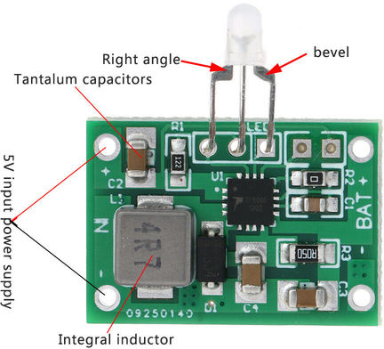

Lithium charge curve
(From powerstream.com)

Lithium-based batteries are more sensitive to charging conditions than NiCD or NiMH. They need a multistep charging process:
Note that LiFePo4's can't easily be charged in series: when a cell is fully charged, it stops passing current. So the other cells in the series string will be prevented from reaching full charge. In order to charge a series pack, there needs to be a battery pack controller to manage each cell.
For my purposes, I'm planning to place the cells in a separate charger charge them individually. The LiFePo4 chargers I've found online use mainly 2 controller chips:
Good review of TP5000-based charger boards are available at
lygte-info.dk/review/Review%20Charger%20TP5000%204.2-3.6V%20module%20UK.html
and
secondlifestorage.com/t-TP5000-module-review-and-technical-details
The one I purchased is very similar, but not identical. Mine came strapped for LiFePo4 batteries (3.6 volt max) as received. Also, it had a single 0.05 ohm sensing resistor (R3) to set the charging current to 2A max. I'm using much smaller batteries, so I replaced this resistor with a 1 ohm unit to set the charging current to 0.1A max. Look for a small-value resistor connected between pins 8 and 9 of the chip. It's a surface-mount component, so requires a moderate amount of soldering skill.
There's a jumper to set the voltage to either 3.6 or 4.2 volts (for other types of Lithium batteries). I'm strictly using LiFePo4's, so no need to change that.
The CN3058 is a simple linear charger. From the data sheet, it appears to use the proper current-voltage profile for LiFePo4 cells. USB single-cell chargers using this chip are available from $3.50 or so.
The TP5000 board looks like a nice solution for experienced users who want to charge larger LiFePo4 cells. Otherwise, just buy a preassembled charger.